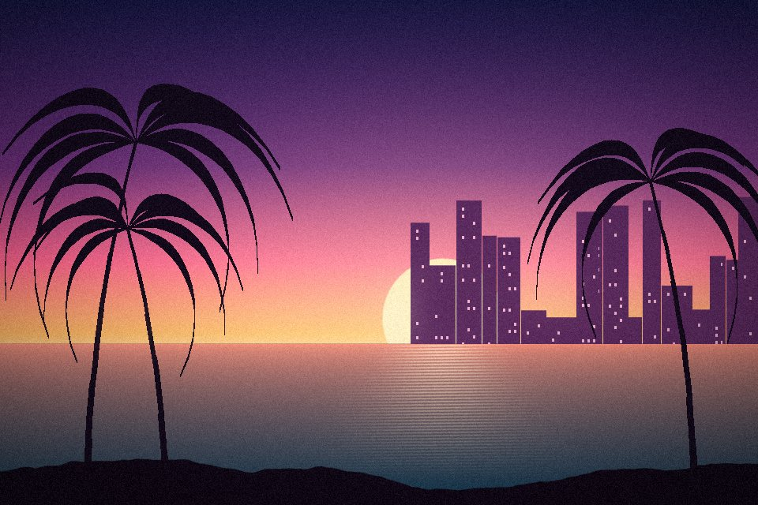

Oyun Haberleri

Son dakikaGündem·12 dk önce· Rockstar Games
GTA VI’nın yeni fragmanı yayınlandı: Leonida’ya ilk yakın bakış
Fragmanda iki ana karakterin hikâyesine ve Vice City’nin gece hayatına dair ilk kez görülen sahneler yer alıyor.

Son dakika